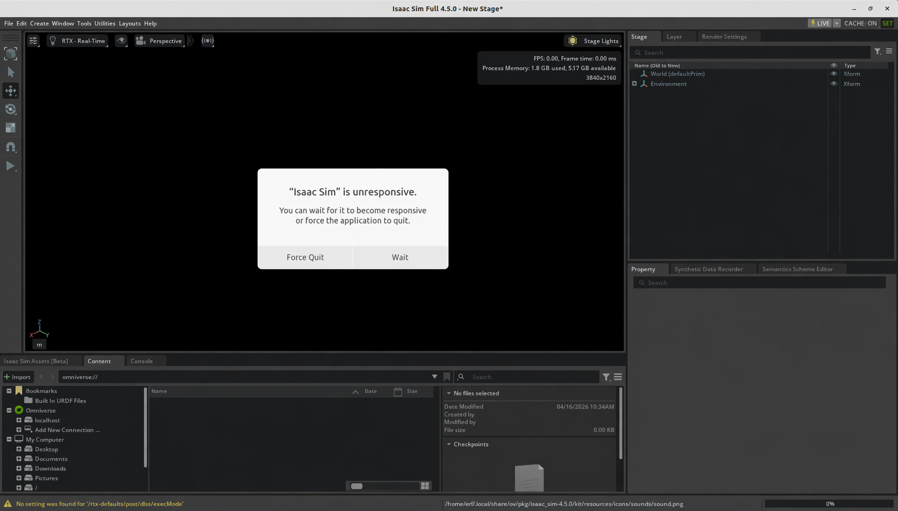
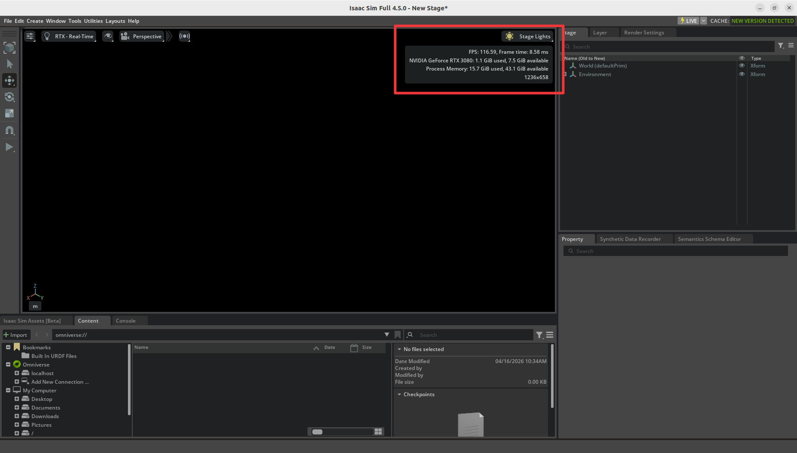
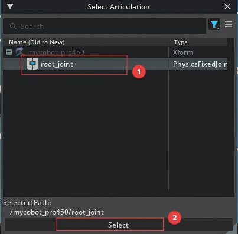
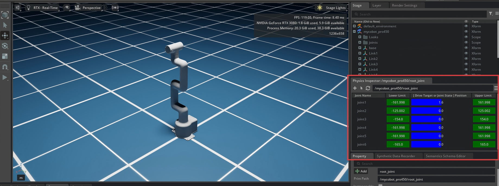
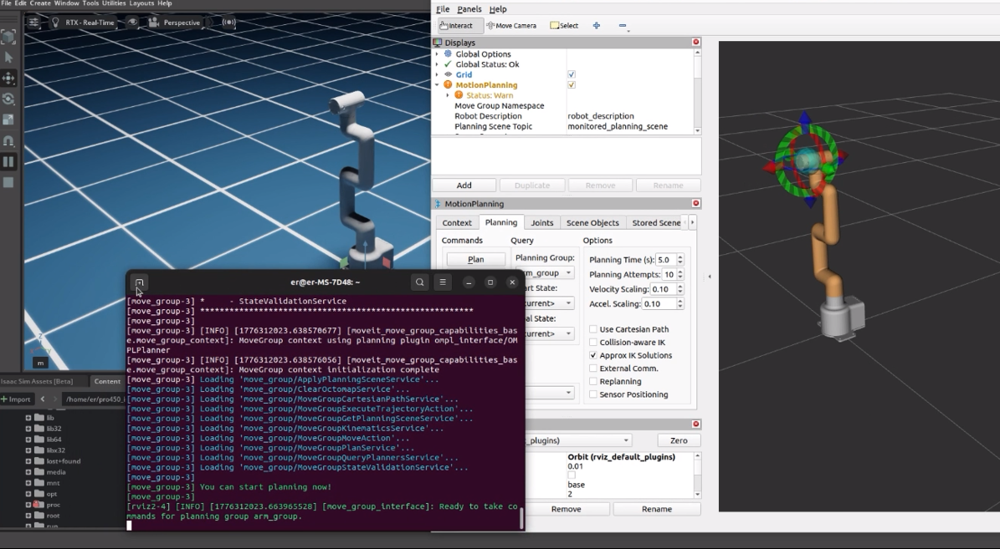
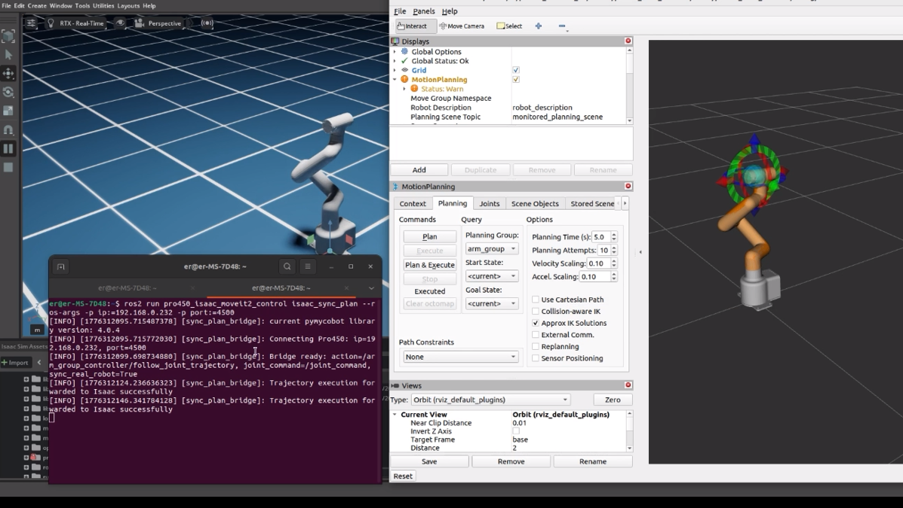

myCobot Pro 450 Isaac Sim
Isaac Sim is a robotics simulation platform provided by NVIDIA, designed for building high-fidelity physical environments and robot models.
mycobot450_isaacsim is a repository dedicated to the collaborative control of the myCobot Pro 450—spanning both simulation and real-world robotics—built upon the following technologies:
- NVIDIA Isaac Sim (Simulation)
- ROS 2 Humble (Communication Middleware)
- MoveIt 2 (Motion Planning)
This project aims to establish a complete pipeline connecting "Simulation → ROS 2 → Real Robot," enabling the following capabilities:
- Joint control and state synchronization within the simulation environment
- Coordinated control between Isaac Sim and the physical Pro 450 robot
- Multiple interaction methods (Sliders / GUI / Keyboard / MoveIt 2)
- An integrated workflow ranging from basic control to advanced motion planning
1 Project Scope
This repository is not merely a standalone functional package, but rather a system-level integration example suitable for:
- Robotics simulation and validation (Isaac Sim)
- Development of ROS 2 control pipelines
- Testing of MoveIt 2 planning and execution
- Sim-to-Real synchronization
2 Technology Stack Overview
- Isaac Sim: Used for physics simulation and rendering
- ROS 2: Responsible for message communication (JointState / Control Commands)
- MoveIt 2: Used for path planning and execution
3 Quick start
If this is your first time with the repo, follow this order:
- Install ROS 2 Humble and Isaac Sim 4.5.0
- Create a ROS 2 workspace and clone this repository
colcon buildall packages- Start Isaac Sim 4.5.0
- Open the USD scene from the repo
- Click
Playin Isaac Sim - Start basic control nodes or MoveIt 2 as needed
Minimal example:
mkdir -p ~/pro450_isaacsim_ws/src
cd ~/pro450_isaacsim_ws/src
git clone https://github.com/elephantrobotics/mycobot450_isaacsim.git
cd ~/pro450_isaacsim_ws
source /opt/ros/humble/setup.bash
colcon build
source install/setup.bash
4 Prerequisites
Before using the examples, confirm the following:
Hardware
- MyCobot Pro 450 arm
- Ethernet cable (robot to Host)
- Power supply
- Emergency stop (for safe operation)
Software and environment
- System:
Ubuntu 22.04 - GPU: NVIDIA dedicated graphics card recommended (The verification environment for this project was an
RTX 3080with10GBof VRAM). Python 3.10or higher installed.ROS2 Humbleinstalled.NVIDIA Isaac Sim 4.5.0or higher installed. Reference: Isaac Sim Download and Installationpymycobotlibrary installed (Version must be greater than4.0.1; install via the terminal commandpip install pymycobot).- Ensure that the MyCobot Pro 450 is properly connected to a power source and is in standby mode.
- Note: The Pro 450 server automatically starts upon device power-up; no manual intervention is required.
- System:
Network Configuration
- MyCobot Pro 450 Default IP Address:
192.168.0.232 - Default Port Number:
4500 Note: Set the host NIC to the same subnet (e.g.
192.168.0.xxxwherexxxis 2–254 and not in conflict with the robot).Example:
- Robot IP:
192.168.0.232 - Host IP:
192.168.0.100 - Subnet mask:
255.255.255.0 - DNS:
114.114.114.114
- Robot IP:
Check: After configuration, from the host run:
ping 192.168.0.232If replies return, the link is OK.
- MyCobot Pro 450 Default IP Address:
5 Install and build
This repo is ROS 2 workspace source, not a standalone binary. Clone into a workspace, build, then use ros2 run / ros2 launch.
Suggested layout:
~/pro450_isaacsim_ws/
├── src/
│ └── mycobot450_isaacsim/
├── build/
├── install/
└── log/
Create and build (open a terminal with Ctrl+Alt+T):
mkdir -p ~/pro450_isaacsim_ws/src
cd ~/pro450_isaacsim_ws/src
git clone https://github.com/elephantrobotics/mycobot450_isaacsim.git
cd ~/pro450_isaacsim_ws
source /opt/ros/humble/setup.bash
colcon build
source install/setup.bash
Build selected packages only:
cd ~/pro450_isaacsim_ws
source /opt/ros/humble/setup.bash
colcon build --packages-select pro450_isaacsim
colcon build --packages-select pro450_isaac_moveit2 pro450_isaac_moveit2_control
source install/setup.bash
6 Package overview
This section provides a brief overview of the various packages within the mycobot450_isaacsim repository.
mycobot_description
ROS 2 description for Pro450:
- URDF model
- Mesh assets
- Robot description for
robot_state_publisher, MoveIt 2, and Isaac Sim import
Key file:
mycobot_description/urdf/mycobot_pro_450/mycobot_pro_450.urdf
pro450_isaacsim
Isaac Sim basics:
- Joint sliders:
slider_control.py - Follow display:
follow_display.py - GUI:
simple_gui.py - Keyboard:
teleop_keyboard.py,teleop_keyboard.launch.py
Typical commands:
ros2 run pro450_isaacsim slider_controlros2 run pro450_isaacsim follow_displayros2 run pro450_isaacsim simple_guiros2 run pro450_isaacsim teleop_keyboardros2 launch pro450_isaacsim teleop_keyboard.launch.py
pro450_isaac_moveit2
MoveIt 2 configuration:
- SRDF / kinematics / joint limits / controllers
move_grouprobot_state_publisher- RViz launch
- Isaac-focused entry:
isaac_moveit.launch.py
pro450_isaac_moveit2_control
MoveIt 2 execution bridge:
isaac_sync_plan.py
Converts MoveIt FollowJointTrajectory execution into what Isaac accepts:
/joint_commandsensor_msgs/msg/JointState
Optional sync to the real Pro450.
7 Start Isaac Sim and open the USD scene
Isaac Sim install path
Example install path:
/home/er/.local/share/ov/pkg/isaac_sim-4.5.0
Use your actual install location.
Launch Isaac Sim
Use your real install directory.
From the install folder, use the official script:
cd /home/er/.local/share/ov/pkg/isaac_sim-4.5.0
./isaac-sim.sh
Note: First launch can take a long time (~3 minutes) while the renderer and core modules initialize. If you see a dialog like:

do not force quit; wait. When Isaac Sim is ready you should see GPU info, for example:

Terminal log should include:
Isaac Sim Full App is loaded
If ROS 2 is sourced in your shell, you can run before Isaac Sim:
source /opt/ros/humble/setup.bash
Open the USD file
Recommended: open the bundled USD:
pro450_isaacsim/pro450_isaacsim/usd/mycobot_pro_450.usd
If the repo is at:
~/pro450_isaacsim_ws/src/mycobot450_isaacsim
a typical full path is:
~/pro450_isaacsim_ws/src/mycobot450_isaacsim/pro450_isaacsim/pro450_isaacsim/usd/mycobot_pro_450.usd
In Isaac Sim:
- Start
./isaac-sim.sh File -> Open- Open
mycobot_pro_450.usd - Wait for the stage to load
- Click
Play
Demo:
8 Isaac Sim configuration
Importing the model
Two approaches:
- Re-import the URDF from
mycobot_descriptioninto Isaac Sim and tune your own USD (set per-jointMax Force,Damping,Stiffness). - Open the pre-authored USD:
pro450_isaacsim/pro450_isaacsim/usd/mycobot_pro_450.usd.
For quick ROS 2 / MoveIt 2 / hardware checks, prefer the bundled USD.
Action Graph (recommended)
Include at least:
ROS2 ContextOn Playback TickIsaac Read Simulation TimeROS2 Publish Joint StateROS2 Subscribe Joint StateArticulation Controller- Optional:
ROS2 Publish Clock
Suggested topics:
- Publish sim joint state:
/joint_states - Receive joint commands:
/joint_command - Optional clock:
/clock
Important prim paths
Easy to misconfigure.
ROS2 Publish Joint State
Point to a prim that exposes joint state, e.g.:
/mycobot_pro450/base
Articulation Controller
Point to the articulation root, not a child link, e.g.:
/mycobot_pro450/base
If wrong, you may see:
Pattern '/mycobot_pro450' did not match any rigid bodiesProvided pattern list did not match any articulationsNoneType object has no attribute link_names
Physics Inspector
After loading the USD:
Tools -> Physics -> Physics Inspector
In the panel, click the arrow tool

In the dialog, choose
Articulation
You can drag joints to move the articulation:

Close Physics Inspector:

Physics Inspector and Articulation Controller both drive the same articulation.
Therefore:
- Publishing only
joint_states: Inspector dragging is usually fine. - ROS control via
Subscribe + Articulation Controller: close Inspector to avoid conflicts.
Otherwise you may get:
Simulation view object is invalidated and cannot be used againArticulation Controllererrors- Competing control on the articulation
9 Basic features
Note: All examples assume the USD scene is already open in Isaac Sim. Path:
mycobot450_isaacsim/pro450_isaacsim/pro450_isaacsim/usd/mycobot_pro_450.usd
1. Slider follow control
- After loading the USD, open Physics Inspector
- Click
Playin Isaac Sim - Syncs Isaac / ROS joint state to the robot. In a terminal:
ros2 run pro450_isaacsim slider_control --ros-args -p ip:=192.168.0.232 -p port:=4500

When running, dragging joints in Inspector moves both sim and hardware.
Important: when the command starts, the arm moves toward the current Isaac pose. Ensure the Isaac model is not intersecting geometry before starting.
Do not snap sliders quickly while connected to the real arm — risk of damage.
Notes:
- The node subscribes joint state and calls
send_angles - Suited to simple joint dragging
2. Model follow display
Let the sim model follow the real arm.
- Load the USD (close Physics Inspector)
- Click
Play - Publishes real joint angles toward Isaac. Run:
ros2 run pro450_isaacsim follow_display --ros-args -p ip:=192.168.0.232 -p port:=4500

Per terminal instructions, hold the end-effector button and drag joints on the robot; Isaac follows.
3. GUI control
Simple GUI on top of the same stack.
- Load the USD (close Physics Inspector)
- Click
Play - Run:
ros2 run pro450_isaacsim simple_gui --ros-args -p ip:=192.168.0.232 -p port:=4500
Enter angles / coordinates and use the buttons to sync robot and sim.

Notes:
- Angle mode publishes target joint angles directly to Isaac
- Coordinate mode sends the real robot first, then syncs Isaac from reported angles
- Short polling + GUI refresh resend improves coordinate sync
4. Keyboard teleop
Keyboard control in pro450_isaacsim, synced in Isaac Sim. Uses the Python API — connect the real arm.
- Load the USD (close Physics Inspector)
- Click
Play - Run:
ros2 launch pro450_isaacsim teleop_keyboard.launch.py ip:=192.168.0.232 port:=4500
A new terminal opens with output similar to:
Mycobot Teleop Keyboard Controller
---------------------------
Movimg options(control coordinations [x,y,z,rx,ry,rz]):
w(x+)
a(y-) s(x-) d(y+)
z(z-) x(z+)
u(rx+) i(ry+) o(rz+)
j(rx-) k(ry-) l(rz-)
+/- : Increase/decrease movement step size
Other:
1 - Go to init pose
2 - Go to home pose
3 - Resave home pose
q - Quit
Use that terminal for interactive keys.
Note: press 2 so the arm goes home before Cartesian control. Example logs:
[WARN] [1758001794.385321]: Coordinate control disabled. Please press '2' first.
[INFO] [1758001804.552778]: Home pose reached. Coordinate control enabled.
[INFO] [1758001817.069637]: Home pose reached. Coordinate control enabled.
[WARN] [1758001836.301070]: Returned to zero. Press '2' to enable coordinate control.
[WARN] [1758001848.830702]: Coordinate control disabled. Please press '2' first.
[INFO] [1758001863.383565]: Home pose reached. Coordinate control enabled.
[WARN] [1758001933.596504]: Returned to zero. Press '2' to enable coordinate control.
[WARN] [1758001942.051899]: Coordinate control disabled. Please press '2' first.
Notes:
- The keyboard node talks to Pro450 directly
send_anglesupdates Isaac immediatelysend_coordsdepends on reported angles to sync Isaac- Launch uses
x-terminal-emulator -eto avoidtermiosTTY errors
10 MoveIt 2 with Isaac Sim
Launch Program
- Load the USD (close Physics Inspector)
- Click
Playin Isaac Sim - Start MoveIt RViz:
ros2 launch pro450_isaac_moveit2 isaac_moveit.launch.py

Planning in MoveIt moves the Isaac model.
To also drive the real arm during execution, in another terminal:
ros2 run pro450_isaac_moveit2_control isaac_sync_plan --ros-args -p ip:=192.168.0.232 -p port:=4500
Then Execute in MoveIt moves both Isaac and hardware.

Details
isaac_moveit.launch.py starts:
rsp.launch.pystatic_virtual_joint_tfs.launch.pymove_group.launch.pymoveit_rviz.launch.py
isaac_sync_plan.py bridges:
/arm_group_controller/follow_joint_trajectory
to:
/joint_command
and optionally to the real robot.
11 Recommended workflows
A: Isaac sim + ROS 2 only
- Import Pro450 and configure the Action Graph in Isaac Sim
- Click
Play - Verify
/joint_states - Use
ros2 topic pubor your own node to sendJointStateon/joint_command
B: Hardware + Isaac basics
- Configure
/joint_commandin Isaac Sim - Run
teleop_keyboardorsimple_gui - Commands execute on hardware
- Mirror to Isaac via
/joint_command
C: MoveIt 2 + Isaac + hardware
Playin Isaac Simisaac_moveit.launch.py- Plan in RViz
Executeisaac_sync_plan.pyconverts the trajectory to/joint_command- Isaac runs; optional hardware sync
12 FAQ
1. No data on /joint_command
Expected. ROS2 Subscribe Joint State is a subscriber; it does not publish.
You need a node that publishes to /joint_command.
2. Sim arm still; /joint_states OK
Check:
Articulation ControllertargetPrim→ articulation root- Something actually publishes
/joint_command - Physics Inspector open and fighting the controller
3. MoveIt plans OK but Execute does not move Isaac
Check:
- You launched
isaac_moveit.launch.py isaac_sync_plan.pyis running- Isaac is still in
Play /joint_commandreceives the bridgedJointState
4. Keyboard: termios.error: (25, 'Inappropriate ioctl for device')
Cause: not a real interactive TTY.
Fix:
- Use
teleop_keyboard.launch.pyfrom this repo - Or
ros2 run pro450_isaacsim teleop_keyboardin a normal terminal
5. Lag between hardware and Isaac
Common causes:
send_coordsdoes not carry direct joint targets- Sync waits on reported angles
- Different control paths for robot vs Isaac
This repo improves GUI coordinate mode with:
- Short polling of hardware angles
- Resend on GUI refresh
For tighter trajectory sync, consider:
- Higher-rate angle sampling
- Interpolated trajectories
- IK then direct Isaac joint targets
13 Notes
- Prefer consistent topics for Isaac control:
/joint_states/joint_command- optional
/clock
- If multiple workspaces install the same package names, watch
source install/setup.bashorder soget_package_share_directory()does not resolve the wrong underlay.